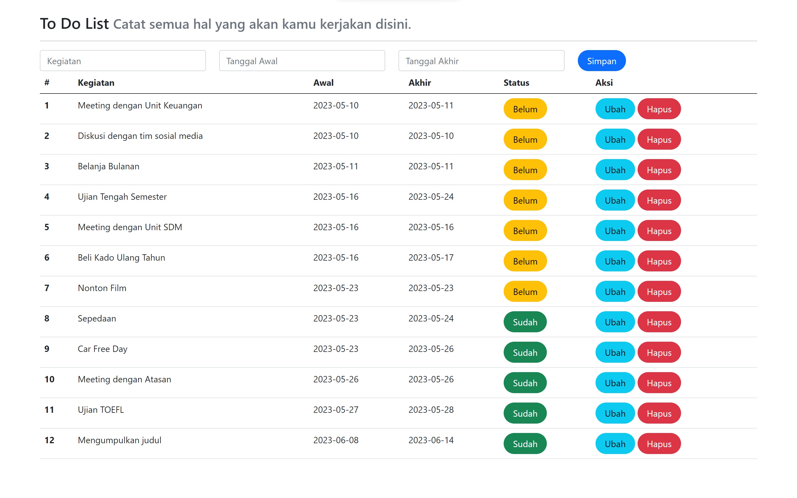
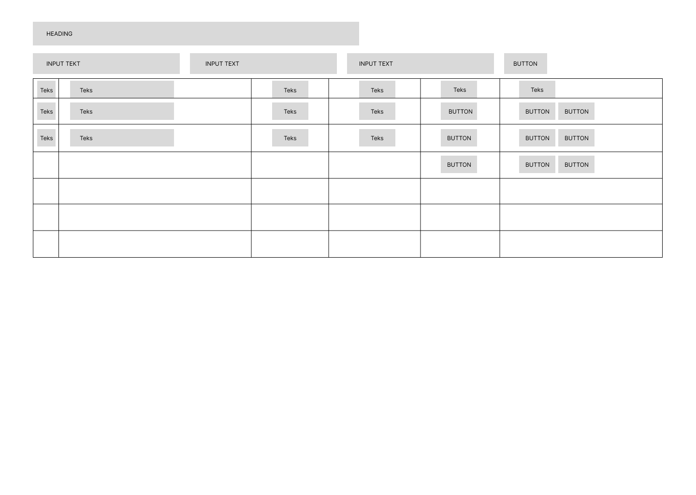

5 Front Page
Setelah mempelajari responsive web dan framework bootstrap, selanjutnya adalah mengaplikasikan bootstrap ke php yang akan dibuat. Berikut adalah contoh tampilan front page sederhana untuk mengaplikasikan bootstrap pada website.

Pembuatan frontpage merupakan langkah awal dalam mengembangkan sebuah situs web. Frontpage, atau halaman depan, adalah halaman pertama yang dilihat oleh pengunjung saat mengakses situs web Anda. Tujuan dari frontpage adalah memberikan informasi yang jelas, menarik, dan menggambarkan dengan baik apa yang situs web Anda tawarkan.
Berikut adalah beberapa langkah untuk membuat frontpage sederhana:
Perencanaan: Pertama, tentukan tujuan dan sasaran situs web Anda.
Desain tata letak: Pilih tata letak yang sederhana dan mudah dibaca. Gunakan grid atau susunan blok untuk menempatkan elemen-elemen seperti judul, navigasi, konten utama, dan footer. Pastikan tata letak yang Anda pilih responsif sehingga situs web Anda terlihat baik di berbagai perangkat.
Header: Header adalah bagian atas halaman yang biasanya berisi judul situs web, logo, dan menu navigasi.
Konten utama: Bagian ini berisi informasi penting yang ingin Anda sampaikan kepada pengunjung.
Sidebar atau widget: Jika diperlukan, tambahkan sidebar atau widget di sisi halaman untuk menampilkan informasi tambahan seperti daftar kategori, arsip artikel, atau tautan sosial media. Pastikan elemen-elemen ini tidak mengalihkan perhatian dari konten utama.
Footer: Footer adalah bagian bawah halaman yang sering berisi tautan tambahan, informasi kontak, atau hak cipta. Pastikan untuk mencantumkan informasi kontak yang relevan dan tautan ke halaman lain di situs web Anda.
Responsif dan optimasi: Pastikan frontpage Anda responsif, artinya tampil dengan baik di berbagai perangkat seperti desktop, tablet, dan ponsel. Periksa tampilan halaman di berbagai browser untuk memastikan konsistensi. Selain itu, pastikan frontpage Anda dioptimalkan untuk kecepatan dengan mengompres gambar dan menggunakan kode yang efisien.
Uji dan perbaikan: Setelah selesai membuat frontpage, uji situs web Anda di berbagai perangkat dan periksa kembali apakah semua elemen berfungsi dengan baik. Terima umpan balik dari pengguna atau orang lain untuk memperbaiki dan menyempurnakan frontpage Anda.
5.1 Desain Front Page

Dalam modul Junior Web Developer ini hanya membuat front page sederhana yaitu mengenai To Do List, dimana tahapan yang dilakukan adalah membuat desain, menentukan tata letak, dan bagian-bagian didalamnya. Dari desain tata letak di atas terdapat beberapa komponen yang digunakan, yaitu Header, Form, Table, dan Button. Untuk pembuatan tampilan atau UI menggunakan framework Bootstrap.
5.2 Membuat Front Page
Pada pengenalan tools telah dijelaskan mengenai instalasi bootstrap. Telah diketahui komponen-komponen yang digunakan, yaitu Header, Form, Table, dan Button yang dapat langsung dicari kelas-kelasnya di dokumentasi bootstrap.
Memulai dengan kode html5 serta menambahkan tag meta dengan name=“viewport” untuk membuat web yang responsif, selain itu juga melakukan instalasi css hingga javascript.
<!DOCTYPE html>
<html lang="en">
<head>
<meta charset="UTF-8">
<meta name="viewport" content="width=device-width,
initial-scale=1.0">
<!-- Bootstrap offline -->
<link rel="stylesheet" href="assets/css/bootstrap.css">
<!-- Bootstrap Online -->
<link href="https://cdn.jsdelivr.net/npm/bootstrap@5.0.2/dist/css/bootstrap.min.css"
rel="stylesheet"
integrity="sha384-EVSTQN3/azprG1Anm3QDgpJLIm9Nao0Yz1ztcQTwFspd3yD65VohhpuuCOmLASjC"
crossorigin="anonymous">
<title>To Do List</title> <!--Judul Halaman-->
</head>
<body>
</body>
</html>Pada vscode ketika menuliskan html maka akan muncul pilihan template html yang akan digunakan, pada kode diatas menggunakan html5. Seperti yang telah dipelajari sebelumnya mengenai framework bootstrap, perlu memuat file bootstrap. Jika dalam menjalankan program selalu terhubung dengan internet dapat memuat css maupun js bootstrap dapat diakses pada halaman dokumentasi bootstrap bagian introduction. Namun jika dalam keadaan jarang terhubung internet maka dapat mengunduh terlebih dahulu file bootstrap lalu dapat meng-export-nya dan membuat folder assets pada lokasi folder projek untuk menyimpan file paket dari bootstrap.
Pada body diisikan konten yang ingin ditampilkan, yaitu judul, form, tabel, dan button. Untuk menggunakan framework pada komponen tersebut dapat melihat pada halaman docs bootstrap untuk melihat dokumentasi dari penggunaan bootstrap lalu cari dokumentasi komponen yang ingin digunakan. Pilih dokumentasi yang sesuai dan modifikasi sesuai dengan kebutuhan yang ingin digunakan.
<div class="container">
Pada tampilan yang diinginkan adalah memusatkan dan mengelompokkan konten utama, maka digunakan container.
5.2.1 Judul (heading)
<h3>
To Do List
<small class="text-muted">
Catat semua hal yang akan kamu kerjakan disini.
</small>
</h3>
<hr> Menampilkan judul dapat menggunakan heading 1 hingga 6. Semakin besar angka heading maka akan semakin kecil ukuran dari teks yang akan ditampilkan. Pada judul menampilkan kalimat “To Do List” sebagai kalimat utama dan “Catat semua hal yang akan kamu kerjakan” sebagai slogan atau kalimat penjelas sehingga pada slogan tersebut dimasukkan kedalam tag small dengan class text-muted untuk mengecilkan huruf dan memberikan warna seakan redup karena teks tersebut memiliki tingkat kepentingan lebih rendah.
5.2.2 Form
<form class="form-inline" method="POST" action=""
name="myForm"">
<div class="row">
<div class="col">
<label for="inputIsi" class="visually-hidden">
Kegiatan
</label>
<input type="text" class="form-control" name="isi"
placeholder="Kegiatan">
</div>
<div class="col">
<label for="inputTanggalAwal" class="visually-hidden">
Tanggal Awal
</label>
<input type="text" class="form-control" name="tgl_awal"
placeholder="Tanggal Awal">
</div>
<div class="col">
<label for="inputTanggalAkhir" class="visually-hidden">
Tanggal Akhir
</label>
<input type="text" class="form-control" name="tgl_akhir"
placeholder="Tanggal Akhir">
</div>
<div class="col">
<button type="submit" class="btn btn-primary rounded-pill px-3"
name="simpan">Simpan</button>
</div>
</div>
</form>Terdapat tiga input pada form, yaitu kegiatan, tanggal awal, dan tanggal akhir. Namun pada database terdapat field id yang diatur dengan autoincrement sehingga akan terisi otomatis sesuai urutan data disimpan. pada bootstrap v5 untuk membuat form dalam satu baris dapat menggunakan grid, yaitu dengan kelas “row” dan “col”. Pada form akan menampilkan placeholder keterangan sesuai inputan form. Sebenarnya terdapat label, namun karena telah terdapat placeholder maka label tersebut kurang berfungsi sehingga digunakan kelas “visually-hidden” untuk tidak menampilkan pada tampilan web. Label bisa saja dihapus namun untuk kebutuhan aksesibilitas maka label tersebut disembunyikan saja.
Selain form juga terdapat button yang bertipe submit dengan kelas dari btn, btn-primary untuk memberikan warna biru atau dapat memberi variasi lain yang sesuai dengan btn-(kode warna yang ada pada dokumentasi bootstrap). Dalam pemilihan warna pada tombol harus disesuaikan dengan user experience.
5.2.3 Tabel
<table class="table table-hover">
<thead>
<tr>
<th scope="col">#</th>
<th scope="col">Kegiatan</th>
<th scope="col">Awal</th>
<th scope="col">Akhir</th>
<th scope="col">Status</th>
<th scope="col">Aksi</th>
</tr>
</thead>
<tbody>
<tr>
<th>1</th>
<td>Meeting dengan Unit Keuangan</td>
<td>2023-05-10</td>
<td>2023-05-11</td>
<td>
<a class="btn btn-warning rounded-pill px-3" type="button"
href="#">Belum</a>
</td>
<td>
<a class="btn btn-info rounded-pill px-3" href="#">Ubah</a>
<a class="btn btn-danger rounded-pill px-3" href="#">Hapus</a>
</td>
</tr>
<tr>
<th>2</th>
<td>Sepedaan</td>
<td>2023-05-23</td>
<td>2023-05-24</td>
<td>
<a class="btn btn-success rounded-pill px-3" type="button"
href="#">Sudah</a>
</td>
<td>
<a class="btn btn-info rounded-pill px-3" href="#">Ubah</a>
<a class="btn btn-danger rounded-pill px-3" href="#">Hapus</a>
</td>
</tr>
</tbody>
</table>
Kelas tabel yang digunakan adalah “table table-hover” dimana ketika pointer berada diatas tabel maka baris data akan di highlight.
5.2.5 Warna
Terdapat beberapa template kelas warna yang disediakan oleh Bootstrap diantaranya
- Primary: (Biru tua)
- Secondary: (Abu-abu)
- Success: (Hijau)
- Danger: (Merah)
- Warning: (Kuning)
- Info: (Biru cerah)
- Light: (Putih atau hampir putih)
- Dark: (Hitam atau hampir hitam)
Pemilihan warna juga merupakan hal yang sangat penting dan perlu diperhatikan.Pemilihan warna akan sangat berpengaruh pada tampilan atau UI sehingga akan mempercantik tampilan dan menarik bagi user. Selain itu dengan warna yang sesuai akan membantu menyampaikan fungsi dari fitur, misalnya merah menandakan suatu yang penting yang memerlukan perhatian lebih, hal tersebut akan memudahkan konsumen dalam menggunakan aplikasi atau disebut user experience